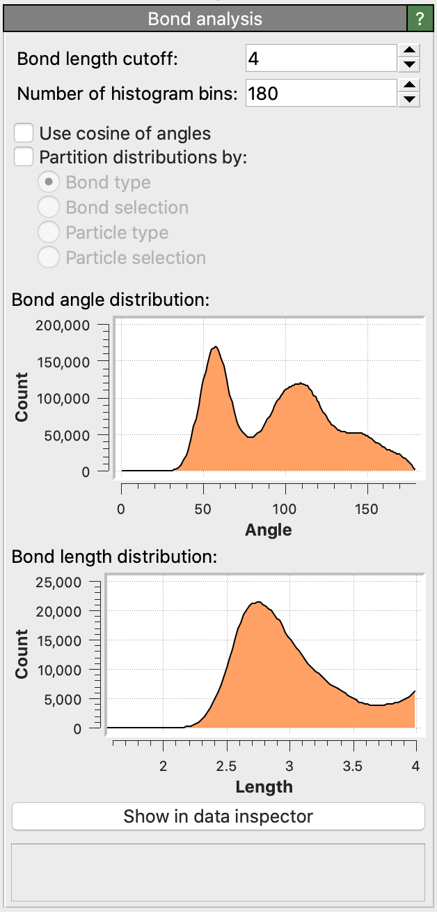

Bond analysis pro
{kind=link}
This modifier computes two histograms for a system of particles with bonds:
The distribution of the bond lengths, i.e. the histogram of distances between pairs of particles connected by bonds.
The distribution of the bond angles formed by pairs of bonds meeting at the same particle.
The modifier only includes bonded particles in these distributions, whereas non-bonded pairs will be ignored. Typically, the bond topology is read from the input simulation file or it needs to be generated within OVITO using the Create bonds modifier. For computing the radial distribution function (RDF) of a system (histogram of the distances between pairs of particles, including non-bonded ones) you can use the Coordination analysis modifier instead.
Bond angle distribution
The computed histogram counts in equisized bins the angles formed by pairs of bonds meeting at the same particle. Bond angles \(\theta\) may range from 0 to 180 degrees. The modifier option Use cosines of angles switches the x-axis of the histogram to the range [-1, +1], now computing the distribution of \(\cos{\theta}\) values in the system.
The modifier outputs the bond angle histogram as a data table, which can be opened in the pipeline data inspector using the button Show in data inspector.
Bond length distribution
The bond length histogram ranges from 0 to the cutoff parameter of the modifier. Bonds exceeding the specified length cutoff will not be counted in the bond length histogram, but they will still be included in the bond angle histogram.
Partitioned distributions
The modifier can break the computed distributions down into several partial histograms, one for each combination of bond or particle types. The following partitioning modes are available:
- Bond type
Computes a separate bond angle histogram for each pair-wise combination of two bond types and a length histogram for each individual bond type.
- Bond selection
Treats currently selected bonds and unselected bonds as two different kinds of bonds. Computes three separate bond angle histograms: one for angles formed by two selected bonds, one for angles formed by two unselected bonds, and one for angles formed by one selected and one unselected bond. This option allows you to calculate the bond angle distribution only for a specific subset of bonds.
- Particle type
Computes separate bond angle histograms for each combination of three particle types and bond length histograms for each pair-wise combination of particle types. If the number of particle types in the system is \(N\), then the bond length distribution, which involves pairs of particles, will be partitioned into \(N (N+1)/2\) partial distributions. Correspondingly, the bond angle distribution, involving triplets of particles (with the central particle discriminable), gets partitioned into \(N^2 (N+1)/2\) partial bond angle distributions.
- Particle selection
Treats currently selected and unselected particles as two different species. Computes three separate bond length histograms: one for bonds connecting two selected particles, one for bonds connecting two unselected particles, and one for bonds connecting one selected and one unselected particle. Accordingly, the bond angle histogram is partitioned into six partial histograms, one for each triplet combination of selected and unselected particles.
Time-averaged distributions
The Bond analysis modifier calculates the instantaneous bond length and angle distributions for just one simulation frame at a time. You can subsequently apply the Time averaging modifier to reduce the instantaneous distributions to a single mean distribution by averaging the output data table over all frames of the loaded MD trajectory.
See also
ovito.modifiers.BondAnalysisModifier (Python API)